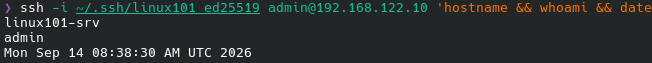
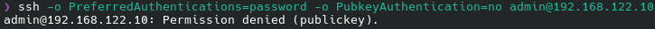
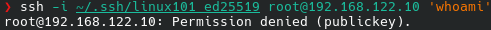

Design, hærdning og overvågning af en
Linux-server:
NixOS sammenlignet med Debian
17. september 2026
Før valget af gæste-styresystem skulle en hypervisor til værten (CachyOS) vælges. VirtualBox og VMware Workstation er de mest udbredte alternativer, men QEMU/KVM (libvirt) er valgt for dets tætte integration med Linux-værten og NixOS’ eget værktøjsøkosystem.
| Aspekt | VirtualBox/VMware | QEMU/KVM (libvirt) |
|---|---|---|
| Arkitektur og ydeevne | Kører som et separat program oven på værtens OS og emulerer hardware i brugerrum, hvilket typisk giver mere overhead | KVM er indbygget i Linux-kernen og udnytter CPU’ens VT-x/AMD-V-udvidelser direkte, tættere på native ydeevne |
| Scriptbarhed | CLI findes (VBoxManage), men værktøjet er primært
bygget til den grafiske brugerflade |
virt-install/virsh er fuldt scriptbare
kommandolinjeværktøjer, uden en grafisk brugerflade som primær
arbejdsgang |
| Licens/åbenhed | VirtualBox’s kerne er GPL, men Extension Pack (USB 2/3, RDP) er proprietær. VMware Workstation er kommerciel | QEMU, KVM og libvirt er fuldt open source i alle dele, ingen separate proprietære tilføjelser |
| Brugervenlighed | Modent, grafisk værktøj med lav indlæringskurve, især med forudgående VirtualBox-erfaring | Kræver CLI-fortrolighed. virt-manager findes som GUI,
men projektets daglige arbejdsgang er CLI-baseret |
Konklusion: QEMU/KVM via libvirt er valgt, primært
fordi NixOS’ eget værktøjsøkosystem (nixos-generators,
nixos-rebuild build-vm) er bygget direkte til QEMU. At
vælge VirtualBox eller VMware ville have betydet at opgive den ubrudte
“flake til kørende server”-arbejdsgang, som hele modul 1’s
reproducerbarhedsargument bygger på, til fordel for en manuel
eksport/import-proces. Dertil kommer en fuldt åben værktøjskæde (Nix,
NixOS, QEMU, KVM, libvirt) uden proprietære komponenter, i modsætning
til VirtualBox’ Extension Pack og VMwares kommercielle licens (se
tabellen ovenfor). Den reelle omkostning er en stejlere indlæringskurve,
men til gengæld fås en ubrudt, scriptbar vej fra flake til kørende
server og et fuldt åbent værktøjsøkosystem hele vejen igennem.
Opgavebeskrivelsen foreslår Debian eller Ubuntu Server. Jeg har af læringsmæssige grunde valgt at benytte NixOS og vil for hvert modul argumentere både fordele og ulemper ved den deklarative tilgang sammenlignet med den traditionelle, imperative arbejdsgang, som opgaven er skrevet ud fra.
| Aspekt | Traditionel (Debian/Ubuntu) | NixOS |
|---|---|---|
| Konfiguration | Frit redigerbare filer i /etc, ingen indbygget
versionsstyring, kan derfor afvige uden at nogen opdager det |
Deklareret i configuration.nix, genereret ved hver
rebuild, naturligt versionsstyrbar i git |
| Opgraderinger | Kan fejle midtvejs og efterlade systemet i en inkonsistent tilstand | Bygget som en samlet, fuldt evalueret generation før aktivering; en fejlkonfiguration kan rulles tilbage til en tidligere generation ved reboot |
| Reproducerbarhed | Kræver ekstra værktøj (fx Packer/Ansible) for at være pålideligt reproducerbar | Indbygget via flake.lock, som fastlåser præcise
versioner af alle pakker |
| Pakke-integritet | Muterbart filsystem for installerede pakker | Skrivebeskyttet, indholdsadresseret /nix/store |
| Sikkerheds-patch-hastighed | Dedikeret debian-security-repo, hurtigt patch-flow |
Kræver typisk en fuld rebuild via nixpkgs-kanalen, historisk langsommere på akutte CVE’er |
| Hærdningsøkosystem (CIS/STIG) | Meget modent, skrevet direkte til Debian/RHEL | Mindre modent end for Debian/RHEL |
Konklusion: NixOS er valgt, fordi de arkitektoniske fordele (reproducerbarhed, rollback til en tidligere, fuldt bygget generation, umuliggørelse af konfigurationsafvigelser) er direkte relevante sikkerhedsegenskaber, opnået gennem automatisering af hele systemtilstanden frem for den traditionelle tilgangs afhængighed af manuelle, gentagne trin. Hvor NixOS’ arbejdsgang adskiller sig væsentligt fra Debians, dokumenteres eksplicit hvad forskellen konkret er, og hvorfor den deklarative løsning vurderes som ligeværdig eller stærkere, side om side i hvert modul.
configuration.nix“Konfiguration”-rækken ovenfor gælder for hele projektet på én gang. På en traditionel Debian-server er de seks moduler spredt over mindst otte forskellige filer og kommandoer:
| Modul | Traditionelt spredt over | Samlet i NixOS |
|---|---|---|
| 1: Netværk og SSH | /etc/hostname, /etc/network/interfaces,
/etc/ssh/sshd_config,
~/.ssh/authorized_keys |
nixos/modules/network.nix |
| 1 og 3: Brugere | /etc/passwd, /etc/shadow,
/etc/group (via
useradd/passwd) |
nixos/modules/users.nix |
| 3: Sudo | /etc/sudoers.d/* |
nixos/modules/users.nix |
| 4: Firewall | /etc/ufw/* |
nixos/modules/firewall.nix |
| 5: Overvågning | Bruger-crontab, et separat script i /usr/local/bin,
/etc/logrotate.d/monitor |
nixos/modules/monitoring.nix |
Alt dette samles i én configuration.nix, der importerer
de fem modulfiler:
{ config, pkgs, ... }:
{
imports = [
./modules/network.nix
./modules/users.nix
./modules/filesystem.nix
./modules/firewall.nix
./modules/monitoring.nix
];
system.stateVersion = "24.05";
environment.systemPackages = with pkgs; [
vim
git
acl
];
}nixos-rebuild switch bygger hele den ønskede
konfiguration som én samlet, identificerbar generation, som derefter
aktiveres. Selve aktiveringen (genstart af tjenester m.v.) er ikke en
databasetransaktion, men resultatet er en generation, der kan rulles
tilbage som en samlet enhed. På en traditionel server findes intet
tilsvarende: hver fil redigeres og genindlæses for sig, uden noget
objekt der repræsenterer hele systemets konfiguration som én genskabelig
enhed.
En flake er Nix’ standardiserede projektformat: en
flake.nix-fil, der deklarerer et projekts inputs
(afhængigheder, fx en bestemt version af nixpkgs) og outputs
(hvad der bygges, fx en NixOS-konfiguration), evalueret i et isoleret
miljø uafhængigt af lokale miljøvariabler. Den tilhørende
flake.lock-fil fastlåser den præcise version af hvert
input, så to bygninger fra samme flake giver identisk resultat, hvilket
er grundlaget for hele projektets reproducerbarhedsargument. Flakes er
teknisk set stadig en eksperimentel Nix-funktion, selvom de reelt er de
facto-standarden i økosystemet. Derfor skal de aktiveres eksplicit med
--extra-experimental-features "nix-command flakes" (synligt
i verify-deploy.sh, modul 6).
VM’en køres under QEMU/KVM via libvirt på en CachyOS-vært, og opbygges i tre faser:
flake.nix definerer hele
serverens konfiguration. nix build .#qcow bygger et
qcow2-diskimage direkte fra flaken; virt-install --import
opretter VM’en i libvirt fra dette image. Hele processen er én
reproducerbar kommandosekvens uden manuelle installationstrin. Se scripts/setup.sh..nix-filerne, kopiere flake-kilden til VM’en
(~/linux101-config), og køre
sudo nixos-rebuild switch --flake ~/linux101-config lokalt
på serveren.nixos-rebuild build-vm, som bygger en midlertidig, isoleret
test-VM uden at røre den rigtige server.VM’en tildeles 2 vCPU, 3-4 GB RAM og 20 GB disk (qcow2).
Linux_101/
├── report/ (denne rapport)
├── flake.nix, flake.lock (pinner nixpkgs, definerer VM'ens konfiguration)
├── nixos/
│ ├── configuration.nix
│ ├── hardware-vm.nix
│ └── modules/
│ ├── network.nix (modul 1)
│ ├── users.nix (modul 1 og 3)
│ ├── filesystem.nix (modul 2)
│ ├── firewall.nix (modul 4)
│ └── monitoring.nix (modul 5)
└── scripts/
├── setup.sh (modul 6)
├── healthcheck.sh (modul 6)
├── monitor.sh (modul 5)
└── verify-deploy.sh (modul 6)At etablere et rent, kontrolleret og reproducerbart udgangspunkt for serveren, samt sikre den første og mest kritiske indgang til systemet: fjernadgang.
Den første adgangsvej ind i en server (her: SSH) er samtidig den mest udsatte. Fejl i denne fase (f.eks. adgangskodebaseret root-login) undergraver alle senere hærdningstiltag. Et reproducerbart udgangspunkt er desuden en forudsætning for, at sikkerhedsvurderingen kan genskabes og kontrolleres af andre.
| Opgave | Traditionel løsning | NixOS-løsning |
|---|---|---|
| Installer Linux server-distro uden GUI | Boot en installations-ISO og gennemgå en interaktiv netinst-wizard | nix build .#qcow bygger et diskimage direkte fra
flake.nix (ingen interaktion);
virt-install --import opretter VM’en |
| Statisk IP og sigende hostname | Redigér /etc/network/interfaces eller netplan
manuelt |
networking.hostName og
networking.interfaces.eth0.ipv4.addresses i
nixos/modules/network.nix |
| Ikke-root administratorbruger | useradd -m -G sudo admin && passwd admin |
users.users.admin = { isNormalUser = true; openssh.authorizedKeys.keys = [...]; };
i nixos/modules/users.nix |
| Deaktiver direkte root-login via SSH | Redigér /etc/ssh/sshd_config, genstart
sshd manuelt |
services.openssh.settings.PermitRootLogin = "no";,
genereret ved hver nixos-rebuild switch |
| Kun nøglebaseret SSH | Redigér sshd_config, læg nøgle i
~/.ssh/authorized_keys manuelt |
services.openssh.settings.PasswordAuthentication = false;
+ authorizedKeys.keys, samme versionsstyrede fil |
linux101-srv): Gør
det muligt entydigt at identificere serveren i logs og alarmer, vigtigt
i incident response.Bootstrap-kommandosekvens:
nix build .#qcow -L
sudo virsh pool-define-as default dir --target /var/lib/libvirt/images
sudo virsh pool-autostart default
sudo virsh pool-start default
sudo virsh vol-create-as default linux101-srv.qcow2 5196742656 --format qcow2
sudo virsh vol-upload --pool default linux101-srv.qcow2 result/nixos.qcow2
sudo virt-install --name linux101-srv --memory 3072 --vcpus 2 \
--disk vol=default/linux101-srv.qcow2,bus=virtio \
--network network=default,model=virtio \
--graphics none --console pty,target_type=serial \
--import --os-variant generic --noautoconsoleVellykket SSH-login med nøgle:
$ ssh -i ~/.ssh/linux101_ed25519 admin@192.168.122.10 'hostname && whoami'
linux101-srv
admin
Afvist password-login:
$ ssh -v -o PreferredAuthentications=password -o PubkeyAuthentication=no admin@192.168.122.10 'echo test'
debug1: Authentications that can continue: publickey
admin@192.168.122.10: Permission denied (publickey).
Afvist root-login (selv med gyldig nøgle):
$ ssh -i ~/.ssh/linux101_ed25519 root@192.168.122.10 'echo test'
root@192.168.122.10: Permission denied (publickey).
Root afvises fordi PermitRootLogin = "no". Root har
derudover ingen gyldig adgangskode
(users.users.root.hashedPassword = "!"), hvilket lukker
adgangsvejen helt af.
Samme fire opgaver, side om side (statisk IP, hostname, deaktiveret root-login, kun nøglebaseret SSH):
# /etc/hostname
linux101-srv
# /etc/network/interfaces
auto eth0
iface eth0 inet static
address 192.168.122.10/24
# /etc/ssh/sshd_config
PermitRootLogin no
PasswordAuthentication no$ systemctl restart networking
$ systemctl restart sshd# nixos/modules/network.nix
networking.hostName = "linux101-srv";
networking.interfaces.eth0.ipv4.addresses = [
{ address = "192.168.122.10"; prefixLength = 24; }
];
services.openssh.settings = {
PermitRootLogin = "no";
PasswordAuthentication = false;
};$ sudo nixos-rebuild switch --flake .Samme resultat, men den traditionelle version er spredt over tre
filer og kræver at huske at genstarte to tjenester manuelt bagefter. Den
deklarative version er én fil, og nixos-rebuild switch
sørger selv for at aktivere ændringen korrekt, uanset hvilke tjenester
der reelt er berørt.
At forstå og anvende Linux’ filsystemhierarki og rettighedsmodel korrekt, så data og programmer kun er tilgængelige for dem, der reelt har brug for adgang.
Forkerte fil- og mapperettigheder er en af de hyppigste årsager til privilege escalation-angreb. ACL’er gør det muligt at implementere finkornet adgangsstyring, når standard bruger/gruppe/andre-modellen ikke er tilstrækkelig præcis.
| Mappe | Formål |
|---|---|
/etc |
Systemkonfiguration. På NixOS genereret ud fra
configuration.nix ved hver rebuild. |
/var |
Variable data: logs, caches, spool-filer. |
/var/log |
Systemets logfiler, det primære sted en analytiker kigger efter tegn på misbrug. |
/home |
Personlige hjemmemapper for almindelige brugere. |
/tmp |
Midlertidige filer, typisk world-writable med sticky bit, klassisk mål for symlink-angreb. |
/srv |
Data for services, som systemet stiller til rådighed. Her ligger
/srv/projekt (se opgave 2). |
/nix/store (NixOS-specifikt) |
Indholdsadresseret, skrivebeskyttet lager for alle pakker og genererede konfigurationsfiler. |
/nix/store er ikke blot endnu en mappe føjet til FHS,
NixOS bryder reelt med hierarkiet: /bin,
/usr/lib og tilsvarende er i praksis tomme, og programmer
linkes i stedet direkte til deres egen, unikke sti i
/nix/store (navngivet med en kryptografisk hash af alle
dens input). Det løser konkret et problem, FHS-modellen strukturelt ikke
kan: kræver program A libssl 1.1 og
program B libssl 3.0, er det på et
traditionelt FHS-system en reel konflikt (begge deler normalt samme
/usr/lib), mens de to versioner på NixOS blot er to
forskellige stier i /nix/store, som aldrig kan
kollidere.
$ sudo mkdir /srv/projekt
$ sudo chown admin:projekt /srv/projekt
$ sudo chmod 2770 /srv/projekt# nixos/modules/filesystem.nix
systemd.tmpfiles.rules = [
"d /srv/projekt 2770 admin projekt -"
];ACL til afgrænset adgang bruger derimod nøjagtig de
samme setfacl-kommandoer på begge platforme, NixOS
overtager ikke ACL’er på datafiler deklarativt, så metoden forbliver
identisk med den traditionelle, se Opgave 4 nedenfor.
chmod 777)$ ls -ld /srv/projekt
drwxrws--- 2 admin projekt 4096 Sep 14 09:05 /srv/projekt2770: ejer og gruppe (projekt) har fuld
adgang, andre har ingen. Setgid (2) sikrer at nye filer
arver gruppen projekt automatisk. chmod 777
undgås, fordi det giver alle på systemet adgang og dermed modarbejder
need-to-know-princippet.
Før:
$ ls -l /srv/projekt/
-rw-rw-rw- 1 admin projekt 37 Sep 14 09:07 app.conf
-rwxrwxrwx 1 admin projekt 28 Sep 14 09:07 deploy.shapp.conf (666) er world-writable, og
deploy.sh (777) er både world-writable og eksekverbart.
Sidstnævnte er et klassisk privilege escalation-mønster: enhver kan
overskrive et script, som senere køres med højere rettigheder.
Rettelse og efter:
$ chmod 640 /srv/projekt/app.conf
$ chmod 750 /srv/projekt/deploy.sh
$ ls -l /srv/projekt/
-rw-r----- 1 admin projekt 37 Sep 14 09:07 app.conf
-rwxr-x--- 1 admin projekt 28 Sep 14 09:07 deploy.shFør: ingen adgang
$ sudo -u revisor ls /srv/projekt
ls: cannot open directory '/srv/projekt': Permission deniedTildeling og efter:
$ sudo setfacl -m u:revisor:rx /srv/projekt
$ sudo setfacl -R -m u:revisor:r /srv/projekt/app.conf /srv/projekt/deploy.sh
$ sudo -u revisor ls -l /srv/projekt
-rw-r-----+ 1 admin projekt 37 Sep 14 09:07 app.conf
-rwxr-x---+ 1 admin projekt 28 Sep 14 09:07 deploy.sh
$ getfacl /srv/projekt
user::rwx
user:revisor:r-x
group::rwx
mask::rwx
other::---Gruppen projekt har fortsat ingen nye medlemmer.
revisor fik adgang udelukkende via ACL’en.
At designe en rollebaseret adgangsstruktur, der afspejler organisationens reelle behov, og som understøtter sporbarhed og ansvarlighed.
Segregation of duties forhindrer, at én kompromitteret konto giver adgang til alt. Individuelle brugerkonti er en forudsætning for troværdig logning. Korrekt brug af sudo med begrænsede rettigheder reducerer skadesomfanget, hvis en konto kompromitteres.
| Bruger | Primær gruppe | Rolle-specifik adgang | Begrundelse |
|---|---|---|---|
admin |
wheel (medlemskab alene giver ingen adgang, se
nedenfor) |
Granulære, navngivne sudo-regler |
Skal kunne drifte serveren uden ubegrænset root-adgang |
developer |
projekt (fra modul 2) |
Læse-/skriveadgang til /srv/projekt via
gruppe-rettigheder |
Udviklere skal kunne bidrage til det fælles projektområde |
guest |
guest (ny) |
Læseadgang til /srv/projekt via gruppe-ACL, ingen
skriveadgang |
En ekstern part skal kunne se, men ikke ændre, projektdata |
admin er nominelt medlem af wheel. NixOS
kræver dette af mindst én bruger, for at undgå at systemet låser sig
selv ude. Medlemskabet giver dog ingen reel adgang:
security.sudo.wheelNeedsPassword står på sin standardværdi
(true), og admin har ingen adgangskode, så
almindelig wheel-baseret sudo er uopnåeligt. Al faktisk adgang kommer
fra security.sudo.extraRules.
useradd +
/etc/sudoers.d/$ sudo useradd -m -G projekt developer
$ sudo useradd -m -G guest guest
# /etc/sudoers.d/admin
admin ALL=(ALL) NOPASSWD: /usr/bin/systemctl restart sshd.service
admin ALL=(ALL) NOPASSWD: /usr/bin/chmod g+s /srv/projekt
admin ALL=(ALL) NOPASSWD: /usr/sbin/nft list rulesetusers.nixusers.users.developer = {
isNormalUser = true;
extraGroups = [ "projekt" ];
};
users.users.guest = {
isNormalUser = true;
extraGroups = [ "guest" ];
};
security.sudo.extraRules = [{
users = [ "admin" ];
commands = [
{ command = "/run/current-system/sw/bin/systemctl restart sshd.service"; options = [ "NOPASSWD" ]; }
{ command = "/run/current-system/sw/bin/chmod g+s /srv/projekt"; options = [ "NOPASSWD" ]; }
{ command = "/run/current-system/sw/bin/nft list ruleset"; options = [ "NOPASSWD" ]; }
];
}];Begge tilgange giver samme granulære, kommando-specifikke sudo, men
mekanikken er forskellig: Debian samler regler i separate filer under
/etc/sudoers.d/, NixOS har slet ikke denne mappe,
verificeret direkte:
$ ls /etc/sudoers.d/
ls: cannot access '/etc/sudoers.d/': No such file or directoryNixOS genererer i stedet én samlet, skrivebeskyttet
/etc/sudoers-fil ud fra hele konfigurationen ved hver
rebuild, ikke separate drop-in-filer, der kan glemmes eller efterlades
uden versionsstyring.
$ sudo -n whoami
sudo: a password is required
$ sudo systemctl restart sshd.service
OK
$ sudo -n systemctl restart dbus-broker.service
sudo: a password is requiredSelv en anden systemctl restart-kommando afvises.
Afgrænsningen er på den fulde kommandolinje, ikke kun programnavnet.
Den genererede /etc/sudoers (0440, kun
læsbar af root):
root ALL=(ALL:ALL) SETENV: ALL
%wheel ALL=(ALL:ALL) SETENV: ALL
admin ALL=(ALL:ALL) NOPASSWD: /run/current-system/sw/bin/nixos-rebuild switch --flake /home/admin/linux101-config,
NOPASSWD: /run/current-system/sw/bin/systemctl restart sshd.service,
NOPASSWD: /run/current-system/sw/bin/chmod g+s /srv/projekt,
NOPASSWD: /run/current-system/sw/bin/nft list ruleset/etc/group og id$ grep -E "^(wheel|projekt|guest):" /etc/group
wheel:x:1:admin
projekt:x:997:developer
guest:x:999:guest
$ id admin
uid=1000(admin) gid=100(users) groups=100(users),1(wheel)
$ id developer
uid=1001(developer) gid=100(users) groups=100(users),997(projekt)
$ id guest
uid=1002(guest) gid=100(users) groups=100(users),999(guest)At reducere serverens angrebsflade til et minimum ved kun at tillade den netværkstrafik, der er strengt nødvendig for systemets funktion.
Firewall-konfiguration er en direkte anvendelse af “default deny”-princippet. En veldokumenteret firewall-konfiguration er ofte det første, en sikkerhedsrevisor eller pentester kigger på ved en systemgennemgang.
Samme tre opgaver (default-deny, kun nødvendige porte åbne, kilde-IP-begrænsning), side om side:
ufw-kommandoer$ sudo ufw default deny incoming
$ sudo ufw allow 2222/tcp
$ sudo ufw allow from 192.168.122.1 to any port 2222
$ sudo ufw enable# nixos/modules/firewall.nix
networking.firewall.enable = true;
networking.firewall.backend = "nftables";
services.openssh.ports = [ 2222 ];
services.openssh.openFirewall = false; # se note nedenfor
networking.firewall.extraInputRules = ''
ip saddr 192.168.122.1 tcp dport 2222 accept
'';Note: services.openssh.openFirewall er
sand som standard og åbner porten for alle kilder, uafhængigt
af extraInputRules. Årsagen er at
allowedTCPPorts er en liste-type: bidrag fra forskellige
moduler lægges sammen i stedet for at overskrive hinanden.
openFirewall = false; er derfor nødvendig, for at
kilde-IP-begrænsningen reelt får effekt.
192.168.122.1:
værtens egen adresse på libvirts NAT-bro. Et enkelt
/32-interval er stadig et defineret interval, blot af
størrelse 1. Da VM’en udelukkende administreres fra denne ene maskine,
ville et bredere interval tillade kilder, der aldrig reelt skal have
adgang.| Port | Protokol | Tjeneste | Begrundelse | Risiko |
|---|---|---|---|---|
| 2222 | TCP | SSH (flyttet fra 22) | Eneste administrative adgangsvej til serveren | Fjernkodeudførelse ved kompromitteret nøgle. Afbødes af nøglebaseret auth, ingen root-login og kilde-IP-begrænsning |
$ sudo nft list ruleset
table inet nixos-fw {
chain rpfilter {
type filter hook prerouting priority mangle + 10; policy drop;
meta nfproto ipv4 udp sport . udp dport { 67 . 68, 68 . 67 } accept comment "DHCPv4 client/server"
fib saddr . mark check exists accept
jump rpfilter-allow
}
chain input {
type filter hook input priority filter; policy drop;
iifname "lo" accept comment "trusted interfaces"
icmpv6 type echo-reply accept
ct state vmap { invalid : drop, established : accept, related : accept, new : jump input-allow, untracked : jump input-allow }
}
chain input-allow {
meta l4proto . th dport @temp-ports accept
icmp type echo-request accept comment "allow ping"
icmpv6 type != { nd-redirect, 139 } accept
ip6 daddr fe80::/64 udp dport 546 accept comment "DHCPv6 client"
ip saddr 192.168.122.1 tcp dport 2222 accept
udp sport 53 accept
}
}Politikken er drop (default deny). Kun loopback,
etablerede/relaterede forbindelser, ICMP, DHCP, og SSH fra præcis
192.168.122.1 accepteres eksplicit.
Verifikation (forsøgt fra en ikke-godkendt kilde-IP på samme undernet):
$ ssh -p 2222 -b 192.168.122.99 admin@192.168.122.10 'hostname'
ssh: connect to host 192.168.122.10 port 2222: Connection timed out
$ ssh -p 2222 admin@192.168.122.10 'hostname' # fra 192.168.122.1 (tilladt)
linux101-srvAt kunne opdage unormal aktivitet, ressourceproblemer og potentielle sikkerhedshændelser, før de udvikler sig til reelle problemer.
“Du kan ikke opdage det, du ikke logger.” System- og sikkerhedslogs er ofte det første sted, en analytiker kigger efter tegn på uautoriserede loginforsøg.
| Opgave | Traditionel løsning | NixOS-løsning |
|---|---|---|
| Cron-baseret overvågning | crontab -e, script i /usr/local/bin |
services.cron.systemCronJobs, ingen strukturel forskel.
NixOS understøtter cron som en almindelig service |
| Logrotation | /etc/logrotate.d/monitor |
services.logrotate.settings."/var/log/monitor.log" |
| Fejlede loginforsøg | journalctl -u ssh (ikke /var/log/auth.log,
se note nedenfor) |
journalctl -u sshd |
Rettelse, verificeret direkte på en frisk
Debian-installation: /var/log/auth.log findes ikke
automatisk. Det kræver rsyslog, som ikke er en del af en
minimal installation. En moderne, minimal Debian-server bruger, ligesom
NixOS, udelukkende journald som standard, indtil
rsyslog eksplicit installeres. Forskellen mellem
platformene ligger derfor ikke i om journald
bruges, begge gør, men i at NixOS aldrig kan ende med en separat
auth.log, da rsyslog ikke er en mulighed at
tilføje ved et uheld eller en vane, mens Debian kan udvides til begge
dele afhængigt af hvad der er installeret.
/etc/scripts/monitor.sh hvert 5. minut som root.scripts/monitor.sh: logger CPU-, disk-
og hukommelsesforbrug til /var/log/monitor.log.| Metric | Tærskel | Begrundelse |
|---|---|---|
Diskforbrug (/) |
> 85% | Et fyldt filsystem kan forårsage tjenestenedbrud og er et kendt symptom på et angreb |
| Hukommelsesforbrug | > 90% | Kan indikere en runaway-proces eller misbrug (fx crypto-mining) |
$ cat /var/log/monitor.log
2026-09-14 11:20:02 CPU=0% DISK=56% MEM=8%
2026-09-14 11:25:02 CPU=0% DISK=56% MEM=8%Logrotation, bekræftet aktiv:
$ systemctl list-timers logrotate.timer
NEXT LEFT UNIT ACTIVATES
Mon 2026-09-14 12:00:00 UTC 23min logrotate.timer logrotate.serviceFremkaldt eksempel (forsøgt login med forkert nøgle):
$ ssh -i ~/.ssh/linux101_developer_ed25519 admin@192.168.122.10
admin@192.168.122.10: Permission denied (publickey).Tilsvarende log-linje:
$ journalctl -u sshd
Sep 14 11:26:16 linux101-srv sshd-session[809]: Connection closed by authenticating user admin 192.168.122.1 port 44368 [preauth]Hvordan et unormalt mønster ville se ud: Mange
gentagne [preauth]-afvisninger på kort tid for samme eller
forskellige brugernavne tyder på automatiseret brute-forcing. Forsøg fra
en anden kilde-IP end 192.168.122.1 ville slet ikke nå sshd
(blokeret af firewallen, modul 4). Gentagne forsøg på at logge ind som
root ville vise, at nogen afprøver kendte standardkonti på
trods af at root-login er deaktiveret (modul 1).
At kunne automatisere opsætning, kontrol og rapportering, så konfigurationen er reproducerbar, konsistent og ikke afhængig af manuelle, fejlbarlige trin.
Automatisering reducerer menneskelige fejlkonfigurationer. Idempotente scripts er en forudsætning for pålidelig, gentagelig systemhærdning.
Et idempotent script giver samme slutresultat, uanset om det køres én gang eller hundrede gange:
# Ikke idempotent: tilføjer en ny linje for hver kørsel
echo "hello" >> /etc/myapp.conf
# Idempotent: tilføjer kun linjen, hvis den ikke allerede findes
grep -qxF "hello" /etc/myapp.conf || echo "hello" >> /etc/myapp.confDet samme gælder for et kald som useradd alice: kørt to
gange fejler det, fordi brugeren allerede findes, mens
id alice &>/dev/null || useradd alice kan gentages
uden problemer. Princippet er grundlaget for
infrastructure-as-code-værktøjer som Ansible, Puppet og NixOS: i stedet
for at udføre en fast liste af kommandoer i rækkefølge, beregnes
forskellen mellem den nuværende og den ønskede tilstand, og kun de
nødvendige ændringer udføres.
| Opgave | Traditionel løsning | NixOS-løsning |
|---|---|---|
| Idempotent opsætningsscript | Bash-script med
useradd/chmod/ufw-kald, skrevet
så genkørsel er sikker |
nixos-rebuild switch er i sig selv idempotent for hele
systemets tilstand. setup.sh automatiserer i stedet selve
bootstrap-mekanismen (bygning og import af VM’en) |
| Verifikation af systemtilstand | Ingen indbygget mekanisme, kræver eget script | verify-deploy.sh: sammenligner kørende system med den
deklarerede konfiguration |
healthcheck.sh (opgave 3) har ingen NixOS-specifik
vinkel. Det er et almindeligt, portabelt statusscript.
scripts/setup.shAutomatiserer bygning og (gen)oprettelse af VM’en fra
flake.nix. Køres på værten:
./scripts/setup.sh.
#!/usr/bin/env bash
set -euo pipefail
readonly VM_NAME="linux101-srv"
readonly POOL_NAME="default"
readonly POOL_PATH="/var/lib/libvirt/images"
readonly DISK_SIZE_BYTES=5196742656 # ~4.84 GiB, matcher diskstørrelsen fra modul 1
readonly VCPUS=2
readonly MEMORY_MB=3072
readonly REPO_DIR="$(cd "$(dirname "${BASH_SOURCE[0]}")/.." && pwd)"
log() {
echo "[setup.sh] $*"
}
ensure_nix_in_path() {
# nix er ikke nødvendigvis i PATH i en non-interaktiv shell (fx cron eller en frisk login-shell)
if ! command -v nix &>/dev/null; then
# shellcheck disable=SC1091
source /nix/var/nix/profiles/default/etc/profile.d/nix-daemon.sh 2>/dev/null || true
fi
if ! command -v nix &>/dev/null; then
echo "FEJL: 'nix' blev ikke fundet i PATH." >&2
exit 1
fi
}
ensure_storage_pool() {
if ! sudo virsh pool-info "$POOL_NAME" &>/dev/null; then
log "Opretter storage pool '${POOL_NAME}'..."
sudo virsh pool-define-as "$POOL_NAME" dir --target "$POOL_PATH"
sudo virsh pool-autostart "$POOL_NAME"
fi
if ! sudo virsh pool-info "$POOL_NAME" | grep -q "State: *running"; then
log "Starter storage pool '${POOL_NAME}'..."
# "|| true": pool'en kan være blevet startet af andet end scriptet (fx libvirtds egen
# autostart) i tidsrummet mellem tjekket og dette kald. Målet er en kørende pool, ikke
# at scriptet selv skal have startet den, så "allerede aktiv" er ikke en reel fejl her.
sudo virsh pool-start "$POOL_NAME" || true
fi
}
remove_existing_vm() {
if sudo virsh dominfo "$VM_NAME" &>/dev/null; then
log "Fjerner eksisterende VM '${VM_NAME}' (for idempotent genopbygning)..."
sudo virsh destroy "$VM_NAME" &>/dev/null || true
sudo virsh undefine "$VM_NAME" &>/dev/null || true
fi
if sudo virsh vol-info --pool "$POOL_NAME" "${VM_NAME}.qcow2" &>/dev/null; then
sudo virsh vol-delete --pool "$POOL_NAME" "${VM_NAME}.qcow2"
fi
}
build_image() {
log "Bygger diskimage fra flake.nix (kan tage nogle minutter)..."
(cd "$REPO_DIR" && nix build .#qcow -L)
}
import_vm() {
log "Opretter volume og importerer image i libvirt..."
sudo virsh vol-create-as "$POOL_NAME" "${VM_NAME}.qcow2" "$DISK_SIZE_BYTES" --format qcow2
sudo virsh vol-upload --pool "$POOL_NAME" "${VM_NAME}.qcow2" "${REPO_DIR}/result/nixos.qcow2"
# --import: springer OS-installation over, da diskimagen allerede har NixOS installeret
sudo virt-install \
--name "$VM_NAME" \
--memory "$MEMORY_MB" \
--vcpus "$VCPUS" \
--disk "vol=${POOL_NAME}/${VM_NAME}.qcow2,bus=virtio" \
--network network=default,model=virtio \
--graphics none \
--console pty,target_type=serial \
--import \
--os-variant generic \
--noautoconsole
}
main() {
ensure_nix_in_path
ensure_storage_pool
remove_existing_vm
build_image
import_vm
log "Færdig. '${VM_NAME}' kører nu med den konfiguration, der er deklareret i flake.nix."
}
main "$@"Hvorfor er scriptet idempotent? Hver funktion
tjekker den nuværende tilstand, før den handler, i stedet for at antage
at intet findes endnu: ensure_storage_pool opretter kun
storage pool’en, hvis den ikke allerede findes, og
remove_existing_vm fjerner kun en eksisterende VM og dens
volume, hvis de rent faktisk findes. build_image og
import_vm bygger og opretter derefter altid VM’en på ny,
men fordi en eventuel gammel version lige er ryddet væk, opstår der
aldrig en fejl om en ressource, der allerede findes. Mønstret er “riv
ned, hvis det findes, byg derefter altid op igen fra bunden”: uanset om
scriptet køres første eller femtende gang, konvergerer slutresultatet
til det samme, nemlig præcis én VM ved navn linux101-srv,
bygget fra den flake.nix, der ligger på tidspunktet for
kørslen.
Idempotens, bevist ved to kørsler i træk:
$ ./scripts/setup.sh
[setup.sh] Bygger diskimage fra flake.nix (kan tage nogle minutter)...
[...]
[setup.sh] Opretter volume og importerer image i libvirt...
Vol linux101-srv.qcow2 created
[setup.sh] Færdig. 'linux101-srv' kører nu med den konfiguration, der er deklareret i flake.nix.
$ ./scripts/setup.sh
[setup.sh] Fjerner eksisterende VM 'linux101-srv' (for idempotent genopbygning)...
Vol linux101-srv.qcow2 deleted
[setup.sh] Bygger diskimage fra flake.nix (kan tage nogle minutter)...
[...]
[setup.sh] Opretter volume og importerer image i libvirt...
Vol linux101-srv.qcow2 created
[setup.sh] Færdig. 'linux101-srv' kører nu med den konfiguration, der er deklareret i flake.nix.
$ echo $?
0scripts/healthcheck.sh
(opgave 3)Køres på serveren:
~/linux101-config/scripts/healthcheck.sh. Kræver den
granulære sudo-regel for nft list ruleset (modul 3/4).
#!/usr/bin/env bash
set -euo pipefail
readonly DISK_WARN_THRESHOLD=85
section() {
echo
echo "== $1 =="
}
check_firewall() {
section "Firewall-status"
# $$ (scriptets PID) sikrer et unikt filnavn, hvis flere kørsler overlapper
if sudo -n nft list ruleset &>/tmp/hc-nft.$$ 2>&1; then
grep -E 'hook input|policy|accept|drop' /tmp/hc-nft.$$ | sed 's/^[[:space:]]*/ /'
else
echo "ADVARSEL: kunne ikke læse firewall-status (mangler sudo-adgang til 'nft list ruleset')"
fi
rm -f /tmp/hc-nft.$$
}
check_disk() {
section "Diskplads"
local usage avail
usage=$(df --output=pcent / | tail -1 | tr -dc '0-9')
avail=$(df -h --output=avail / | tail -1 | tr -d '[:space:]')
echo "Rodfilsystem: ${usage}% brugt, ${avail} ledig diskplads"
if (( usage > DISK_WARN_THRESHOLD )); then
echo "ADVARSEL: diskforbrug overstiger tærskel på ${DISK_WARN_THRESHOLD}%"
fi
df -h /
}
check_users() {
section "Aktive/loggede ind brugere"
who
}
check_uid_zero() {
section "Brugere med UID 0 (ud over root)"
local extra
# felt 3 i /etc/passwd er UID; kun 'root' bør have UID 0
extra=$(awk -F: '$3 == 0 && $1 != "root" { print $1 }' /etc/passwd || true)
if [[ -n "$extra" ]]; then
echo "ADVARSEL: fandt uventede UID 0-brugere:"
echo "$extra"
else
echo "Ingen -- kun root har UID 0."
fi
}
main() {
echo "Healthcheck for $(hostname) -- $(date '+%Y-%m-%d %H:%M:%S')"
check_firewall
check_disk
check_users
check_uid_zero
}
main "$@"Eksempeloutput fra det færdige system:
[admin@linux101-srv:~]$ ~/linux101-config/scripts/healthcheck.sh
Healthcheck for linux101-srv -- 2026-09-14 12:34:43
== Firewall-status ==
type filter hook prerouting priority mangle + 10; policy drop;
type filter hook input priority filter; policy drop;
ip saddr 192.168.122.1 tcp dport 2222 accept
== Diskplads ==
Rodfilsystem: 61% brugt, 1.7G ledig diskplads
Filesystem Size Used Avail Use% Mounted on
/dev/vda3 4.5G 2.6G 1.7G 61% /
== Aktive/loggede ind brugere ==
admin pts/0 2026-09-14 12:11 (192.168.122.1)
== Brugere med UID 0 (ud over root) ==
Ingen -- kun root har UID 0.scripts/verify-deploy.shVerificerer at den kørende konfiguration stemmer overens med den
deklarerede (flake.nix), uden at ændre noget selv. Køres på
serveren: ./verify-deploy.sh.
#!/usr/bin/env bash
set -euo pipefail
readonly FLAKE_DIR="${HOME}/linux101-config"
readonly FLAKE_ATTR="nixosConfigurations.linux101-srv.config.system.build.toplevel"
main() {
if [[ ! -d "$FLAKE_DIR" ]]; then
echo "FEJL: fandt ikke flake-kilde i ${FLAKE_DIR}" >&2
exit 2
fi
echo "Evaluerer (uden at bygge) den deklarerede konfigurations output-sti..."
local declared_path current_path
# --raw undgår at output-stien bliver JSON-anført med citationstegn
declared_path=$(nix --extra-experimental-features "nix-command flakes" \
eval --raw "${FLAKE_DIR}#${FLAKE_ATTR}")
current_path=$(readlink -f /run/current-system)
echo "Kørende system: ${current_path}"
echo "Deklareret system: ${declared_path}"
if [[ "$current_path" == "$declared_path" ]]; then
echo "OK: systemet stemmer overens med den deklarerede konfiguration."
exit 0
else
echo "ADVARSEL: systemet er drevet væk fra den deklarerede konfiguration."
echo "Kør: sudo nixos-rebuild switch --flake ${FLAKE_DIR}"
exit 1
fi
}
main "$@"Bevis, begge grene testet:
$ ./verify-deploy.sh
Kørende system: /nix/store/r0vf...-nixos-system-linux101-srv-...
Deklareret system: /nix/store/r0vf...-nixos-system-linux101-srv-...
OK: systemet stemmer overens med den deklarerede konfiguration.
$ echo $?
0
$ sed -i 's/allowedTCPPorts = \[ \];/allowedTCPPorts = [ 9999 ];/' nixos/modules/firewall.nix
$ ./verify-deploy.sh
Kørende system: /nix/store/r0vf...-nixos-system-linux101-srv-...
Deklareret system: /nix/store/agv1...-nixos-system-linux101-srv-...
ADVARSEL: systemet er drevet væk fra den deklarerede konfiguration.
$ echo $?
1